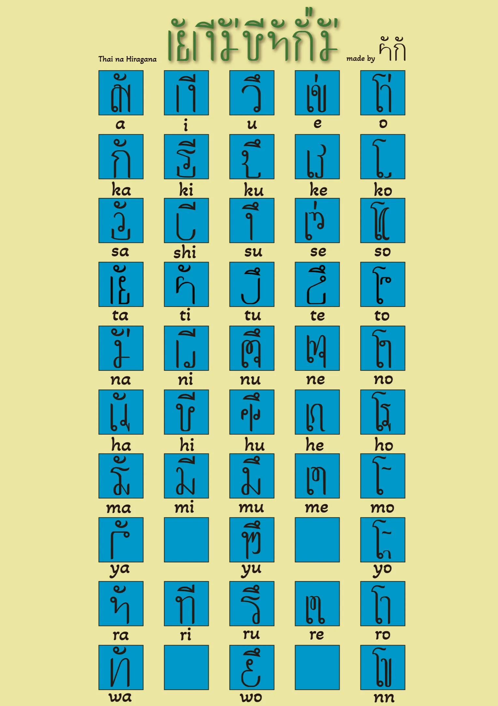

2023
タイなひらがな
タイ好きが高じて、タイ語のようなひらがなを作りました。あ〜タイ行きタイ。
↓↓↓↓↓↓↓↓↓↓↓↓↓↓↓
私はタイが大好きだ。
タイといえば、カオマンガイやプーパッポンカレーなどのタイフード、巨大なガネーシャや大仏、、、そして何よりも面白いものがタイ文字だ。丸っこくて可愛い。
私たちはタイ文字を見て、これはタイっぽいな、タイ文字だろう、と感じる。あわよくば、ぱっと見タイ文字に見えるひらがなを作ってみたいと思った。では、タイ文字らしさをかたちづくっているものは何なのか。タイ文字の成り立ちや書き方を調べ、タイ文字の特徴を探した。
タイ文字の特徴
- 子音と母音の組み合わせで構成されている
- 上に母音、下に子音or左に母音、右に子音
- 丸が含まれる
- 丸から書く
- 一筆書き
それらの特徴を押さえ、ひらがなをタイ文字風に変換させる作業を行った。
タイ文字らしいひらがなを作るのは予想以上に難しかった。ひらがなに寄せすぎるとタイ文字に見えなくなってしまうので、あくまでも「パッと見タイ文字、よく見るとひらがな」の感覚を意識した。文字のカーブの角度や、文字の細さなども吟味した。
タイ文字が子音と母音の組み合わせで構成されているという特徴に則り、タイなひらがなでは、ひらがなの母音あいうえおの5種類それぞれに、タイ文字のあいうえおの母音を当てはめた。「あ」を例にあげると、「の」をさかさまにしたような形が、文字の上部に配置されている。これがタイ文字の「あ」の母音である。「か」「さ」「た」・・・と続くあ段にも同じ形が配置されている。い段、う段、え段、お段それぞれにも同じように共通の形が含まれているので、ぜひ探してほしい。
